Popular Tourist Attractions
View All Tourist Attractions

សារមន្ទីរទួលស្លែង
រូបភាព៖ Wikimedia Commons
វត្តភ្នំ
រូបភាព៖ Wikimedia Commons
ផ្សារអូរឫស្សី
រូបភាព៖ Wikimedia Commons
វិមានឯករាជ្យ
រូបភាព៖ Wikimedia Commons
ព្រះបរមរាជវាំង
រូបភាព៖ Wikimedia Commons
សួនច្បារមាត់ទន្លេ
រូបភាព៖ Wikimedia Commons
ផ្សារទួលទំពូង
រូបភាព៖ Wikimedia Commonsខេត្តនានារបស់កម្ពុជា
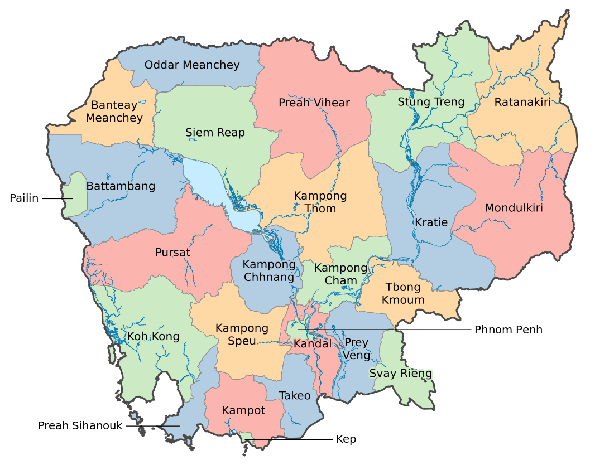
ឧត្តរមានជ័យ
ព្រំដែនខាងជើង
ចំណុចលេចធ្លោ :
ប្រាសាទបន្ទាយឆ្មារអន្លង់វែងព្រំដែនថៃល្បីល្បាញអំពី :
ប្រាសាទបន្ទាយបុរាណ • កន្លែងប្រវត្តិសាស្ត្រថ្មីៗបន្ទាយមានជ័យ
ច្រកទ្វារទៅកាន់ប្រទេសថៃ
ចំណុចលេចធ្លោ :
ប៉ោយប៉ែតសិរីសោភ័ណផ្លូវរថភ្លើងល្បីល្បាញអំពី :
ព្រំដែនផ្លូវគោកមមាញឹកបំផុត • ច្រកទ្វារពាណិជ្ជកម្ម និងផ្លូវរថភ្លើង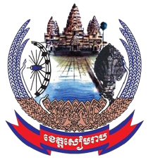
សៀមរាប
ជាទីតាំងប្រាសាទអង្គរវត្ត
ចំណុចលេចធ្លោ :
អង្គរវត្តផ្លូវផាប់ទន្លេសាបល្បីល្បាញអំពី :
ឧទ្យានអង្គរជាបេតិកភណ្ឌយូណេស្កូ • របាំអប្សរា • ភូមិលើបឹងព្រះវិហារ
ប្រាសាទលើមេឃ
ចំណុចលេចធ្លោ :
ប្រាសាទព្រះវិហារកោះកេរប្រាសាទបឹងមាលាល្បីល្បាញអំពី :
ទីសក្ការៈលើច្រាំងជាបេតិកភណ្ឌយូណេស្កូ • ប្រាសាទចាស់ក្នុងព្រៃជ្រៅស្ទឹងត្រែង
កន្លែងទន្លេជួបគ្នា
ចំណុចលេចធ្លោ :
ទន្លេមេគង្គទន្លេសេកុងតំបន់ដីសើមរាមសារល្បីល្បាញអំពី :
ចំណុចប្រសព្វទន្លេមេគង្គ-សេកុង • តំបន់ដីសើមការពាររតនគិរី
តំបន់ខ្ពង់រាបក្រហមព្រៃផ្សៃ
ចំណុចលេចធ្លោ :
បឹងយក្សឡោមទឹកជ្រោះបានលុងល្បីល្បាញអំពី :
បឹងក្នុងបាតភ្នំភ្លើង • ព្រៃភ្នំ និងភូមិជនជាតិដើមភាគតិចបាត់ដំបង
ជង្រុកអង្ករនៃប្រទេសកម្ពុជា
ចំណុចលេចធ្លោ :
រថភ្លើងឫស្សីភ្នំបាណន់ល្អាងសត្វប្រចៀវល្បីល្បាញអំពី :
ជិះនរី • ផ្លូវសម័យអាណានិគម • អង្ករល្អបំផុតប៉ៃលិន
ខេត្តត្បូង
ចំណុចលេចធ្លោ :
រ៉ែត្បូងភ្នំយ៉ាត់ភ្នំក្រវាញល្បីល្បាញអំពី :
រ៉ែសាភៀរ និងទទឹម • ទេសភាពភ្នំកំពង់ធំ
ដីស្ងប់ស្ងាត់កណ្ដាលប្រទេស
ចំណុចលេចធ្លោ :
សំបូរព្រៃគុកស្ពានថ្មទន្លេសាបល្បីល្បាញអំពី :
ប្រាសាទរាជធានីចេនឡា • ជាបេតិកភណ្ឌយូណេស្កូក្រចេះ
ដីនៃត្រីផ្សោត
ចំណុចលេចធ្លោ :
ត្រីផ្សោតអៀរវាឌីកោះត្រងថ្ងៃលិចមេគង្គល្បីល្បាញអំពី :
ត្រីផ្សោតទឹកសាបកម្រ • ទីក្រុងចាស់តាមមាត់ទន្លេ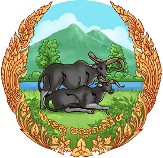
មណ្ឌលគិរី
នគរនៃភ្នំតូចៗ
ចំណុចលេចធ្លោ :
មណ្ឌលអភិរក្សដំរីទឹកជ្រោះបូស្រាសែនមនោរម្យល្បីល្បាញអំពី :
ខ្ពង់រាបខ្ពស់បំផុត • ព្រៃស្រល់ • អាកាសធាតុត្រជាក់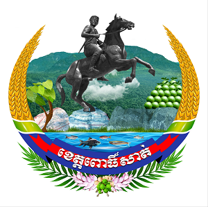
ពោធិ៍សាត់
ថ្មម៉ាបប្រ និងភ្នំ
ចំណុចលេចធ្លោ :
ការឆ្លាក់ថ្មម៉ាបប្រភ្នំក្រវាញទន្លេសាបល្បីល្បាញអំពី :
ជាងចម្លាក់ថ្មម៉ាបប្រល្បីល្បាញ • ជួរភ្នំព្រៃផ្សៃ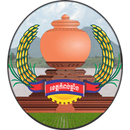
កំពង់ឆ្នាំង
ទីក្រុងកំពង់ដីឥដ្ឋ
ចំណុចលេចធ្លោ :
ភូមិឆ្នាំងដីឥដ្ឋផ្ទះអណ្តែតទឹកកំពង់ផែទន្លេល្បីល្បាញអំពី :
សិប្បកម្មដីឥដ្ឋប្រពៃណី • ជីវិតភូមិអណ្តែតទឹកកំពង់ចាម
បេះដូងនៃទន្លេមេគង្គ
ចំណុចលេចធ្លោ :
ស្ពានគីហ្សូណាភ្នំប្រុស និងភ្នំស្រីកោះប៉ែនល្បីល្បាញអំពី :
ស្ពានទន្លេមេគង្គដំបូងគេ • ភ្នំតាមរឿងព្រេងគូត្បូងឃ្មុំ
ដីកណ្ដាលកៅស៊ូ
ចំណុចលេចធ្លោ :
ចម្ការកៅស៊ូមាត់ទន្លេមេគង្គទីក្រុងសួងល្បីល្បាញអំពី :
ខេត្តថ្មីបំផុត • ឧស្សាហកម្មទឹកកៅស៊ូ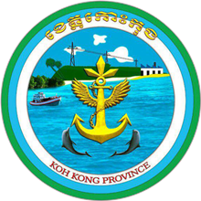
កោះកុង
ព្រៃឆ្នេរសមុទ្រព្រៃផ្សៃ
ចំណុចលេចធ្លោ :
ពាមក្រសោបទឹកជ្រោះតាតៃកោះកុងល្បីល្បាញអំពី :
ព្រៃលិចទឹកតាមឆ្នេរ • ឆ្នេរផ្សងព្រេងអេកូ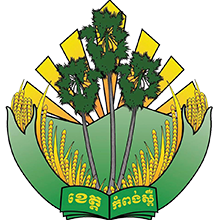
កំពង់ស្ពឺ
ដីស្ករត្នោត
ចំណុចលេចធ្លោ :
ឧទ្យានគិរីរម្យស្ករត្នោតភ្នំឱរ៉ាល់ល្បីល្បាញអំពី :
ឧទ្យានជាតិ • ទេសភាពព្រៃស្រល់លើភ្នំភ្នំពេញ
គុជខ្មៅនៃអាស៊ី
ចំណុចលេចធ្លោ :
វិមានព្រះបរមរាជវាំងវត្តភ្នំផ្សារធំថ្មីល្បីល្បាញអំពី :
រាជធានី • ជាកន្លែងជួបគ្នារវាងទន្លេបីកណ្ដាល
ព័ទ្ធជុំវិញរាជធានី
ចំណុចលេចធ្លោ :
កោះសូត្រឧដុង្គភូមិសិប្បកម្មល្បីល្បាញអំពី :
ការត្បាញសូត្រ • ចេតិយរាជធានីចាស់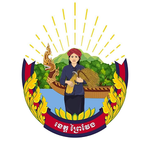
ព្រៃវែង
វាលទំនាបបៃតងតាមទន្លេមេគង្គ
ចំណុចលេចធ្លោ :
ចម្ការស្វាយភ្នំបាភ្នំស្រែស្រូវល្បីល្បាញអំពី :
ស្វាយផ្អែម • វាលស្រែធំទូលាយ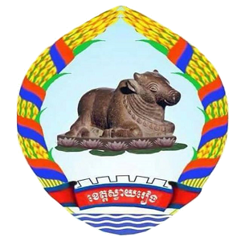
ស្វាយរៀង
ជ្រុងភាគអាគ្នេយ៍
ចំណុចលេចធ្លោ :
តំបន់សេដ្ឋកិច្ចពិសេសបាវិតរង្វិលទន្លេមេគង្គច្រកទ្វារវៀតណាមល្បីល្បាញអំពី :
តំបន់រោងចក្រកំពុងរីកចម្រើន • ពាណិជ្ជកម្មព្រំដែន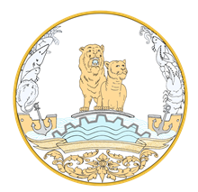
ព្រះសីហនុ
ត្បូងឆ្នេរសមុទ្រកម្ពុជា
ចំណុចលេចធ្លោ :
អូទ្រេសសេរេនឌីភីធីអូឈើទាលល្បីល្បាញអំពី :
កំពង់ផែទឹកជ្រៅ • កោះ • កន្លែងមុជទឹកមើលត្រីតាកែវ
ជម្រកនៃអរិយធម៌
ចំណុចលេចធ្លោ :
ភ្នំដាអង្គរបុរីទន្លេបាទីល្បីល្បាញអំពី :
សិលាចារឹកខ្មែរចាស់បំផុត • ប្រាសាទសម័យហ្វូណន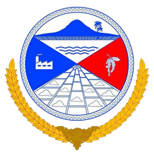
កំពត
រដ្ឋធានីម្រេច
ចំណុចលេចធ្លោ :
ចម្ការម្រេចភ្នំបូកគោផ្សារក្ដាមល្បីល្បាញអំពី :
ម្រេចល្បីល្បាញពិភពលោក • ច្រាំងទន្លេសម័យអាណានិគម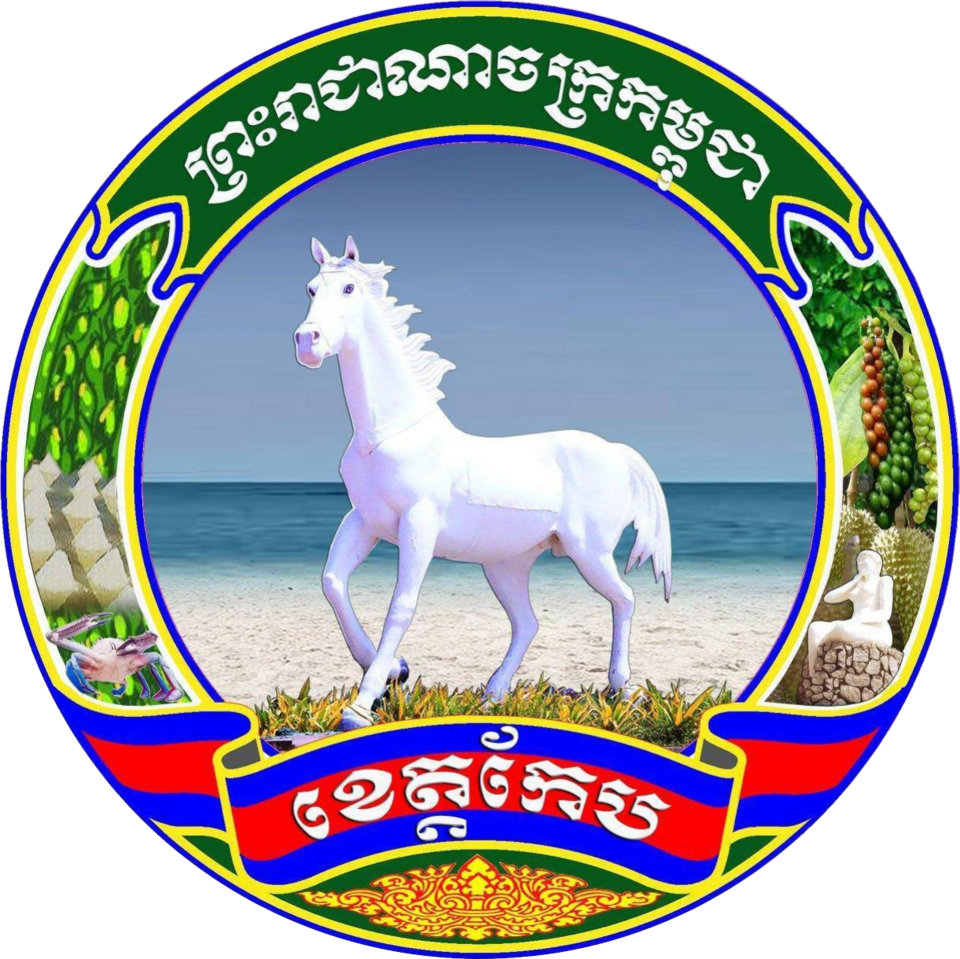
កែប
ថ្ងៃឈប់សម្រាកមាត់សមុទ្រ និងក្ដាម